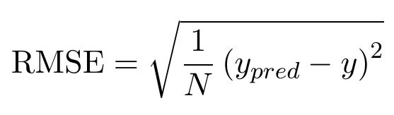

Machine Learning
In this section the Socio data set will be explored using different machine learning techniques. The data can be found here http://data.kk.dk/dataset/samlede-socio-data-kbh.
The goal is to use this data to both get inside into what features are important when predicting different values. We want to predict the following:
- Predict how many have a high income
- Predict how many are above 65 years old
- Predict how many danes live in a given rode.
The predicts will be made both with an elastic net method and a random forest regression method. The elastic net is a linear method while the random forest is not. Both methods will be used and compared.
For both methods the root mean square error (RMSE) will be given as an estimate for the error. Furthermore the features that the methods deem most important will be investigated.
This will serve as a guideline if you for instance want to find a rode with a lot of wealthy people, then you woold know what to look for.
Random Forest
Social Data & Visualization 2017
Using a random forest regression method the 3 responses mentioned above were predicted. Doing a 10 fold cross-validation to get an estimate of the error gave the results in the table below.
The errors are represented as the root mean square error (RMSE) :

The error is presented together with a 95% prediction interval
| Year |
High income prediction - RMSE |
Percent danes in a rode prediction - RMSE |
Above 65 years prediction - RMSE |
| All years |
2.74% ± 0.66% |
3.40% ± 1.88% |
2.33% ± 1.38% |
| 2008 |
5.31% ± 1.32% |
6.10% ± 2.89% |
5.97% ± 2.55% |
| 2009 |
4.89% ± 1.82% |
5.61% ± 1.84% |
5.14% ± 1.52% |
| 2010 |
4.29% ± 0.62% |
5.58% ± 2.40% |
5.02% ± 1.77% |
| 2011 |
4.26% ± 0.95% |
5.82% ± 1.32% |
4.99% ± 2.03% |
| 2012 |
4.10% ± 0.95% |
5.72% ± 1.17% |
5.12% ± 1.67% |
| 2013 |
4.01% ± 0.77% |
5.99% ± 1.52% |
4.65% ± 1.78% |
The top 10 features that random forest deem most important can be seen below.
| Predicting amount of people with high income |
Predicting amount of danes |
Predicting amount of people above 65 years |
| 1. Percentage of houses larger than m2 |
1. Number of people between 18-29 years |
1. Percent with a medium income |
| 2. Perecent with a long education |
2. Percentage without an education |
2. Percentage of singels without children |
| 3. Percent with a medium long education |
3. Number of singles with no children |
3. Average home area pr. person |
| 4. Percentage of owner-occupied dwelling |
4. Percentage of people between 18-29 years |
4. Percentage of other home types |
| 5. Percentage of couples with children |
5. Percentage of people between 30-39 years |
5. Percentage of homes build 1930-1949 |
| 6. Average home area pr. person. |
6. Number of people between 30-39 years |
6. Percentage of houses with size 60m2-79m2 |
| 7. Percentage of couples without children |
7. Percentage of singles with no children |
7. Number of homes build 1930-1949 |
| 8. Percent of people with their own business |
8. Percentage of general housing |
8. Number of homes build 1950-1979 |
| 9. Percentage of wage earners |
9. Number of inhabitants |
9. Percentage of homes build 1950-1979 |
| 10. Percentage in age group 18-29 years |
10. Average house area pr. person |
10. Percentage of people with a workman education |
Elastic net
Social Data & Visualization 2017
The same analysis is done with an elastic net. The errors here are also presented together with a 95% prediction interval.
| Year |
High income prediction - RMSE |
Percent danes in a rode prediction - RMSE |
Above 65 years prediction - RMSE |
| All years |
5.84% ± 0.54% |
4.79% ± 1.03% |
3.99% ± 0.99% |
| 2008 |
5.58% ± 1.90% |
7.96% ± 4.29% |
6.41% ± 3.33% |
| 2009 |
3.68% ± 2.00% |
4.96% ± 1.28% |
3.91% ± 1.28% |
| 2010 |
2.76% ± 0.50% |
4.82% ± 1.43% |
3.79% ± 1.33% |
| 2011 |
2.86% ± 0.61% |
4.67% ± 0.71% |
4.04% ± 1.39% |
| 2012 |
2.67% ± 0.37% |
4.52% ± 0.79% |
3.90% ± 1.37% |
| 2013 |
2.69% ± 0.43% |
4.57% ± 0.69% |
3.87% ± 1.25% |
The top 10 features that elastic net deem most important can be seen below.
| Predicting amount of people with high income |
Predicting amount of danes |
Predicting amount of people above 65 years |
| 1. Percentage of people with a job |
1. Percent singles without children |
1. Percent singles without children |
| 2. Perecent with a long education |
2. Percentage above 65 years |
2. Percentage with a medium income |
| 3. Average home area pr. person |
3. Percentage between 18-29 years |
3. Average home area pr. person |
| 4. Percentage of owner-occupied dwelling |
4. Percentage of people with a workman education |
4. Percetange of danes |
| 5. Percent with a medium long |
5. Percentage between 50-64 years |
5. Number of inhabitants |
| 6. Percentage of couples with children |
6. Percentage between 40-49 years |
6. Percentage of homes build 1950-1979 |
| 7. Percentage of net newcomers |
7. Percentage between 30-39 years |
7. Number of singles without children |
| 8. Number of of owner-occupied dwelling |
8. Percentage of people studying |
8. Number of foreigners from western countries |
| 9. Number of people between 50-64 years |
9. Percentage with a medium long education |
9. Number of houses with size 80m2-99m2 |
| 10. Number of people with a short education |
10. Percent couples with children |
10. Percentage of houses larger than m2 |